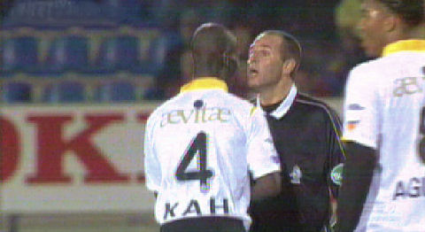
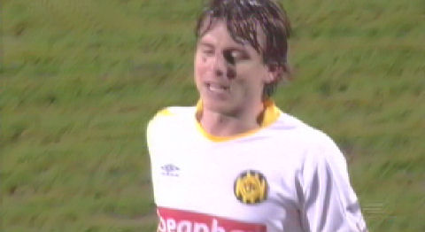
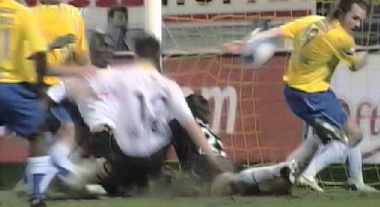
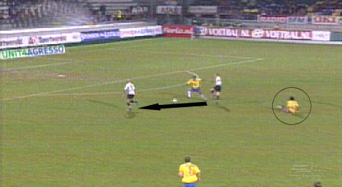
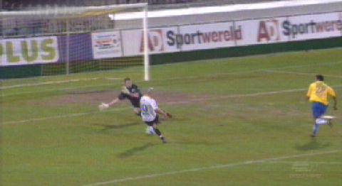
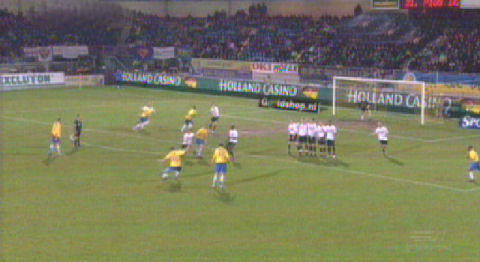
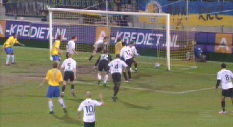
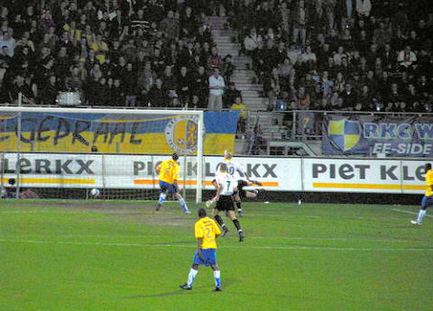
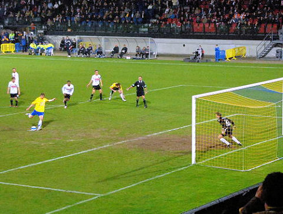
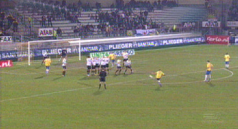

|
RKC
- Roda JC (3-2) 16 maart 2007
|

Kah wordt vermaand door Bossen.

Meeuwis moet even langs de lijn vanwege een wondje met bloed.

Op dat moment een vrije trap voor RKC. Het schot wordt niet door Castro klemvast
gehouden waarna een scrimmage voor het doel ontstaat. Daarbij schiet Saeijs
uiteindelijk in eigen doel: 1-0, (15').

Koenders verspeelt de bal. Sibum speelt op Ramzi die doelman Wevers passeert:
1-1, (31').

Het moment.

Even later is er weer een vrije trap voor RKC.

Castro gaat voor de tweede keer de fout in door de bal niet vast te klemmen
waarna
Berger 2-1 inschiet via de paal, (35').

In de 61e min. scoort Vandamme
de gelijkmaker; 2-2
foto sv-online

Na een overtreding van De Fauw krijgt RKC een penalty. Het schot van Berger
wordt
gered door Castro.
foto sv-online

Vrije trap Van den bergh: 3-2, (71'). De zoveelste zeperd in Waalwijk en
bovendien dikverdiend!
© Koempels Pleasure Dome
|